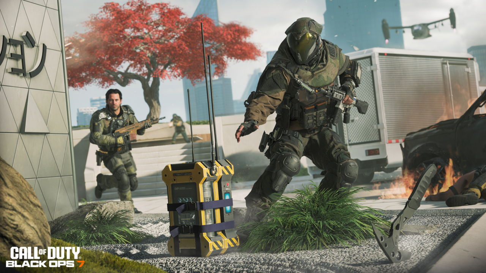

Gameplay
Le gameplay de Call of Duty Black Ops 7 est rapide et dynamique. Le joueur doit utiliser différentes armes et stratégies pour remporter les parties.

Image montrant une phase de combat pendant une partie.

Illustration d’une action stratégique dans le jeu.